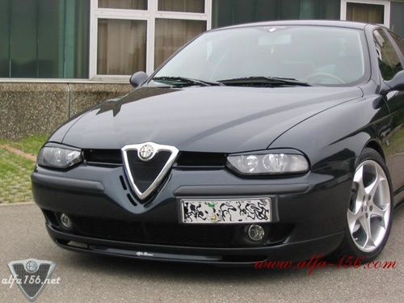
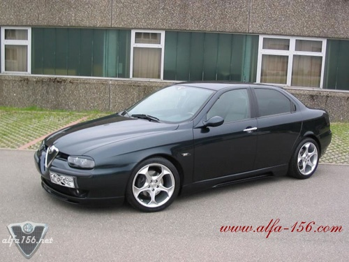
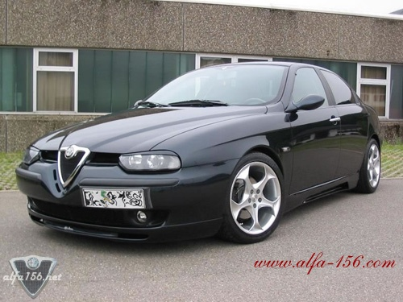
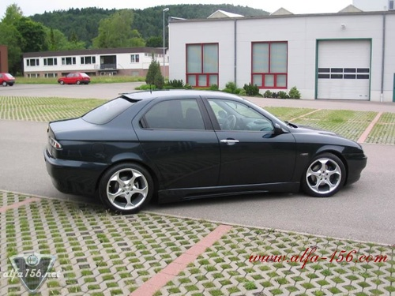
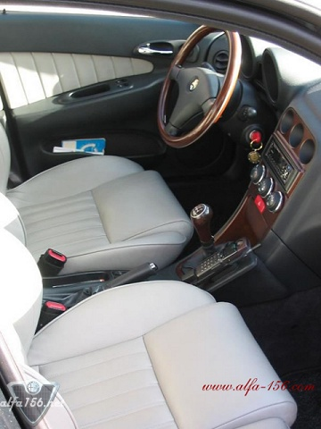

Year of construction 1999, rim OZ Antares in 8x17"(tire Dunlop SP9000 235/40Z R17), K&N Filter,
cathedral prop of Wiechers, Novitec setting, front spoiler lower Novitec, heart without props
and lattice, desire inlets in front without prop with lattice and blue Spots, black GTA headlights
with bad view, switchable LED parking lights of white shining of blue flashing, sideskirts of
Italdesign/BE, outside mirror kompl. in car color, rear lights klear transparent darkly,
sounded reflectors, exhaust system Novitec starting from KAT with Cuprohr (loud), side turn
signals black highly transparently, turn signal pears silver in front, roof spoiler Novitec,
back window sticker, wood steering wheel with Airbag, wood shift lever wood center console,
MOMO Leather seats light-grey, blue floor space lighting (neon), blue center console lighting (neon),
lit alfaromeo signature in the floor mats, back window and rear side windows with CFC anthracite
coal foil sounded, high-grade steel entrance borders in front and in the back with engraved
Alfa Romeo signature, remote maintenance, silver scales, Kenwood Headunit with 10-subject
change-over switch, Pioneer 4-chanel amplifier, Crunch bass crate, MB quart of loudspeakers
in the file, in front and in the back in the doors sound system of Alfa, trunk with
blue lighting (neon). Owned by Robert Martinovic, located in Albstadt, Germany.




![[Prev]](bw_prev.gif)
![[Index]](bw_index.gif)
![[Next]](bw_next.gif)